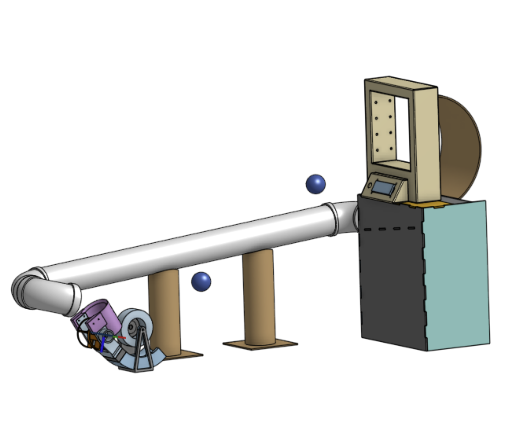
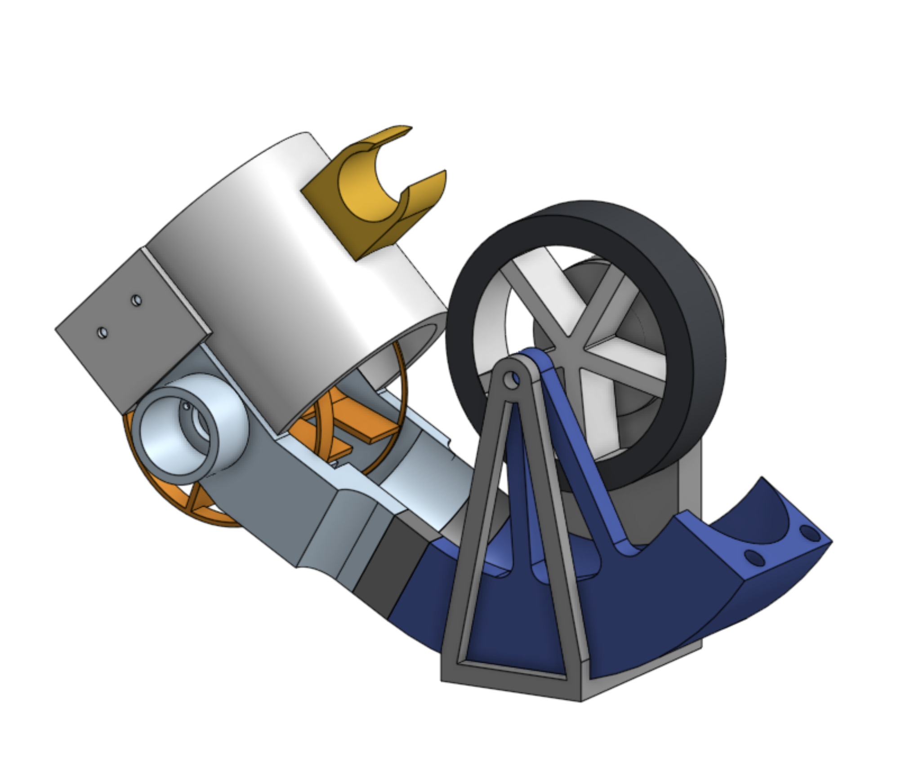
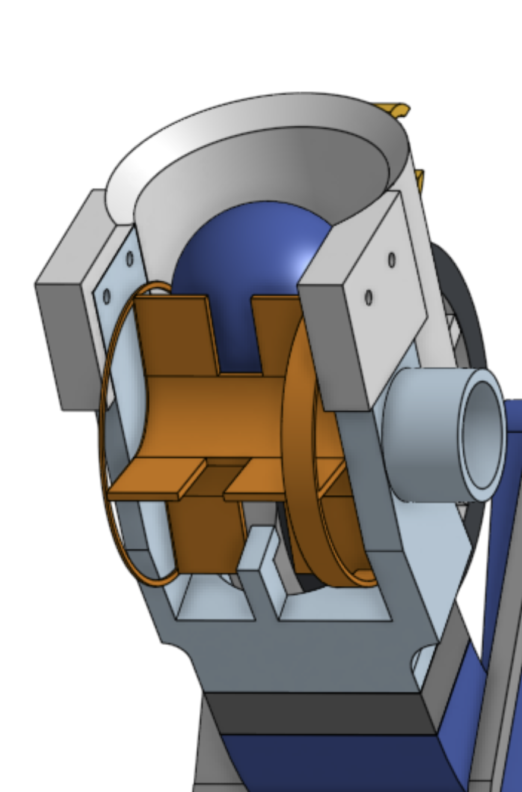
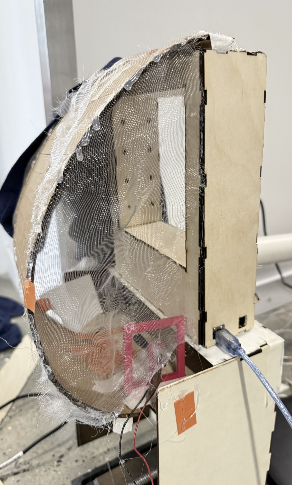
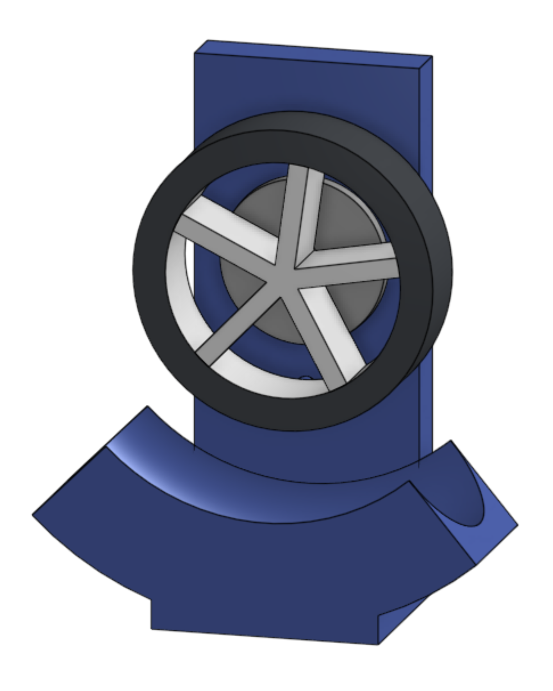
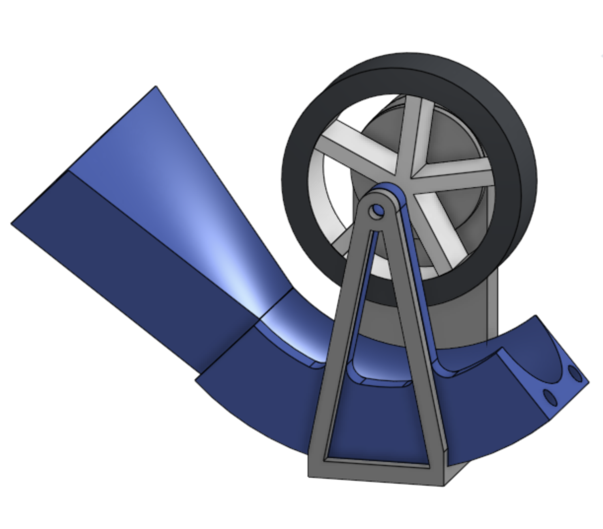
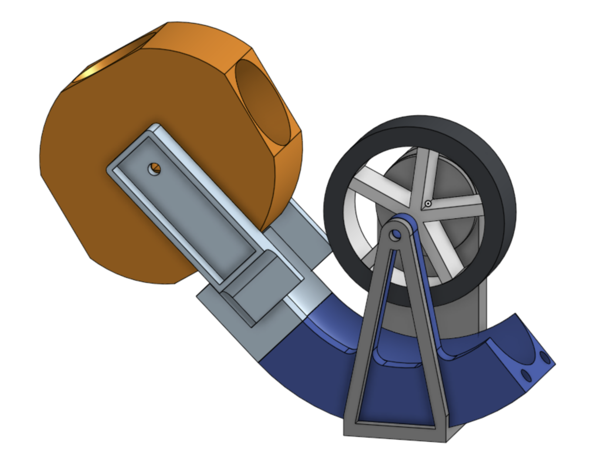

This project was developed as a closed-loop ping-pong ball circulation system integrating automated launching, velocity measurement, and ball recovery using the Arduino platform. The machine launched ping-pong balls through a sensor-monitored path using a flywheel-based system, measured launch speed using infrared break sensors, and recirculated balls back into the launch mechanism through a combined fan and gravity-assisted recovery subsystem.
The system was designed to maintain continuous operation through coordinated interaction between mechanical launching, sensing, and circulation subsystems. Final performance achieved 63 circulations in 60 seconds, with development challenges primarily involving ball launch height consistency and ball loss during the recovery process.


The launcher used a single vertical flywheel to accelerate balls along a circular track concentric with the flywheel. This flywheel was fed using a separator wheel moving with a constant velocity.
A single flywheel design was chosen over a dual-flywheel design in order to remove the risk of a difference in flywheel speeds causing erratic launch direction changes. It was seen as the most electrically robust design, and least prone to electrical or mechanical failure compared to dual flywheel, puncher, or air-based launchers. The track itself can rotate about the center of the flywheel to allow for an adjustable launch angle.
A separator wheel was used to feed balls into the flywheel at a consistent and predictable rate in order to minimize the loss of angular momentum of the flywheel and improve launch speed consistency. To eliminate ball loss at the separator stage, a 3D-printed covering was placed above the separator wheel, with a vibration motor attachment to eliminate potential ball jams.

The hoop subsystem detected balls and showed key information about the circulation system at the moment, including the amount of balls that had gone through up to that point, the amount of balls per minute, and the velocity of each ball as it went through.
Detection was achieved using two planes of eight IR break sensors each, with four on each side vertically. This was meant to ensure that the break sensor beams would be dense enough to detect balls but not too dense where the cones of light from different sensors might interact with each other. Due to the linear nature of the launcher and the fact that the wheel spun on a plane parallel to the vertical sides, it was assumed that there would be minimal variation of the ball path in the plane parallel to the ground, so it was deemed unnecessary to have IR sensors on the top and bottom walls.
Balls were caught on the other side of the hoop using a curved piece of cardboard with a thin net on the sides to ensure balls did not fall out. The curved nature of the backboard was determined experimentally and minimized ball bounce-outs due to the reflection angle of the ball paths. Balls were then routed into a laser-cut box, which were then sent towards a round hole on the side with the help of a natural incline and a DC motor attached to a propeller. This routed the ball into a PVC pipe, which brought it back to the launcher.

Our initial launcher prototype was a static circular track with placement for a motor and flywheel above it. This was meant for testing of the single-flywheel concept, which was successful, but difficult to modify or add attachments to as the project evolved.

Our second launcher prototype used a base and a moveable track, allowing for a variable launch angle. Additionally, holes were put on each end of the track to allow for future press-fit attachments like increased track length. This worked well, but failed to fully deal with the issue of lost momentum after multiple balls went through in succession.

Our third launcher prototype introduced the separator wheel and track to help control angular momentum loss. These attachments were affixed to the previous prototype using the track holes, removing the need for fully reprinting the launcher. However, the geared motor the track was designed for failed to provide sufficient torque, and the initial separator wheel design was bulky and difficult to feed balls into, resulting in our final redesign as shown above.
A major development challenge was maintaining consistent launch velocity during repeated operation. Consecutive launches caused temporary flywheel speed reduction, producing variations in trajectory and launch height.
Recovery reliability also required extensive iteration. Ball bounce-outs and inconsistent routing occasionally interrupted closed-loop circulation during extended operation.
Additional tuning focused on improving separator reliability, reducing feed jams, and stabilizing the sensing path through the IR sensor arrays.
The above video shows a partial circulation test of the prototype before the backboard modification. On final demonstration day, the ping pong ball circulator successfully circulated 63 balls in the span of 60 seconds.
Future improvements could improve better tuning of the separator control circuit. The circuit failed shortly before the final demonstration, forcing us to provide the separator wheel with full power from a 9 volt battery rather than regulating speed. A separator wheel with better tuning could improve the balance between maintaining angular momentum and maximizing ball throughput.